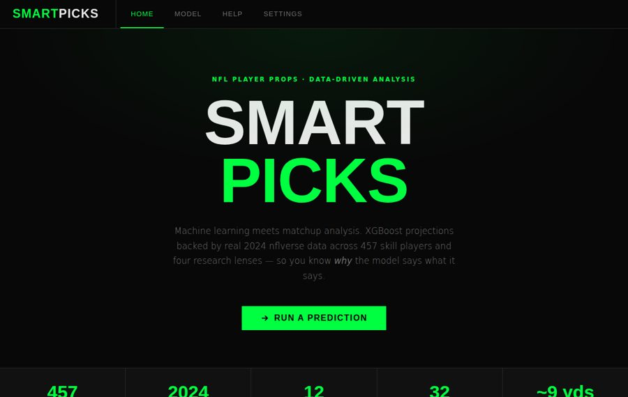

NFL · 2024 season · Machine learning application
Smart Picks
A sports betting prediction tool for NFL player props.
Smart Picks projects a player's output for 12 prop types (passing yards, receptions and more) against a specific opponent and venue. An XGBoost model trained on rolling 3-, 5- and 10-game averages and opponent defensive data produces the projection. When a sportsbook line is entered, 2,000 bootstrap simulations turn it into an over/under pick with a confidence level. Four research views show the recent form, matchup history, home/away split and defensive context behind each prediction.
- Players covered
- 457
- Passing yards MAE
- ~9 yds
- Simulations per pick
- 2,000
Methods: Python, XGBoost regression, nflverse play data, bootstrap simulation
Open the tool →